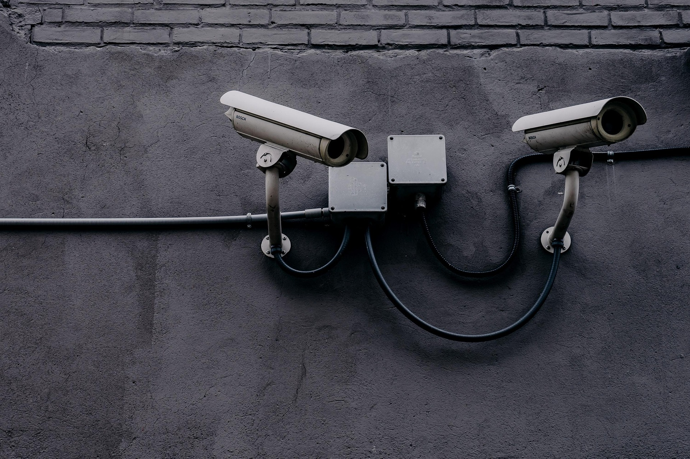

LoviTech
chaque probleme a sa solution
chaque probleme a sa solution
LoviTech est votre partenaire technique à Lubumbashi, spécialisé dans la réparation électronique, les installations électriques et les solutions de sécurité. Nous proposons des services fiables, rapides et professionnels.
Systèmes d’alarme, vidéosurveillance (CCTV), détecteurs et contrôle d’accès pour maisons, commerces et sites.

IGBT, diodes, transistors, résistances, condensateurs, étain et accessoires pour réparations et projets.
Installations domestiques, systèmes solaires, maintenance et protection électrique.
Cartes électroniques, onduleurs, postes à souder : diagnostic et remise en état d’équipements.
Travaux de soudure, assemblage et réparation métallique avec des solutions solides et durables.